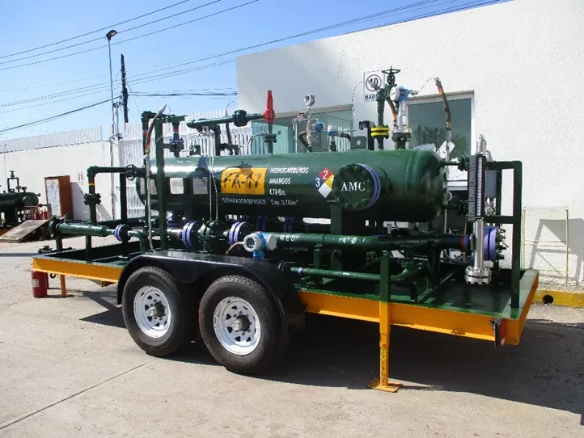

Servicio ·
Aforo de pozos con separador bifásico
de circuito cerrado
Medimos durante 24 h el gasto de aceite, agua y gas de un pozo sin ventear a la atmósfera: la mezcla se separa, cada fase se mide con instrumentación Endress+Hauser y ambas regresan a la línea hacia batería. Las lecturas llegan a un RTU y se visualizan en el SCADA .
- Estabilizaciónel pozo se alinea al separador y las variables se asientan
- En curso24 h de medición continua y totalización
- Finalizadocierre de acumulados y reporte

Animación del proceso
Recorrido de cámara pozo → separador → batería con flechas de flujo, etiquetas de equipos e instrumentos y lecturas del SCADA.
Ver animación 2Corte interno del separador
Sección 3D paso a paso: deflector, liberación de gas, asentamiento, extractor de niebla, control de nivel y salida de gas.
Ver corte 3Vista aérea de la macropera
Layout con árbol, cabezal, separador, líneas temporales, caseta de medición, zona de seguridad y ruta de acceso.
Ver macropera 4DTI simplificado
Diagrama de tubería e instrumentación con simbología ISA, lazos de control y tags, en vertical para imprimir y horizontal para pantalla.
Ver DTILas lecturas mostradas en las animaciones son simuladas e ilustrativas. Las medidas de la macropera son aproximadas, estimadas a partir de imagen satelital.